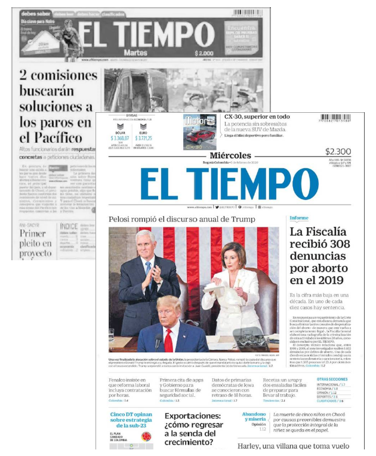
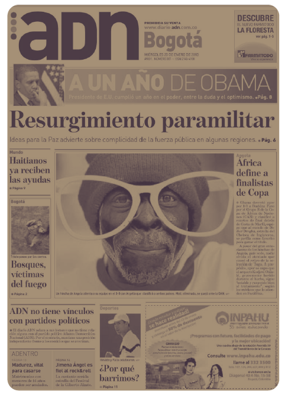

Hi, I'm Maro.
A UX / Interaction Designer with 5+ years designing end-to-end digital and service experiences in complex environments including banking and large-scale platforms. I translate user insights into intuitive, scalable solutions across mobile and web.
Selected case studies.
2019 — 2025Designing mobile-first banking journeys at scale.
At Pragma S.A., I lead end-to-end design of digital banking experiences for Bancolombia translating research into user-centered solutions that reduce friction across critical journeys, improve task completion, and align with business goals in a complex financial ecosystem.
Read case studyTurning a 100-year-old newspaper into a digital subscription engine.
Research-led paywall and plan architecture that helped El Tiempo reach 100,000 digital subscribers in year 1 — 3.3× the original target. I led the subscription plan research, cardsorting with 30 users across 5 archetypes, and the responsive landing experience.
Read case study
Bringing a free newspaper from 5 cities to a whole country.
Mobile-first redesign that took ADN from a PDF download page to a national digital news product. I led the research and UX, working with stakeholders to build a Business Model Canvas, define personas, and design an information architecture the team still uses.
Read case study
A designer for users, business, and the system at the same time.
I'm Marolin Solano. I trained as an industrial designer at UIS in Bucaramanga, Colombia, and have worked across Bancolombia (via Pragma S.A.), Casa Editorial El Tiempo, and ADN Newspaper.
Now in Toronto, completing a Master of Design in Strategic Foresight & Innovation at OCAD University learning to design for systems and futures, not just features.